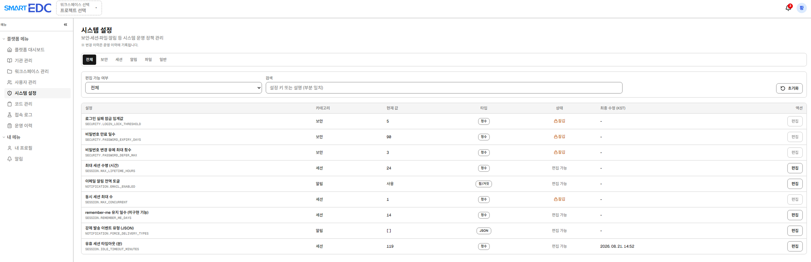
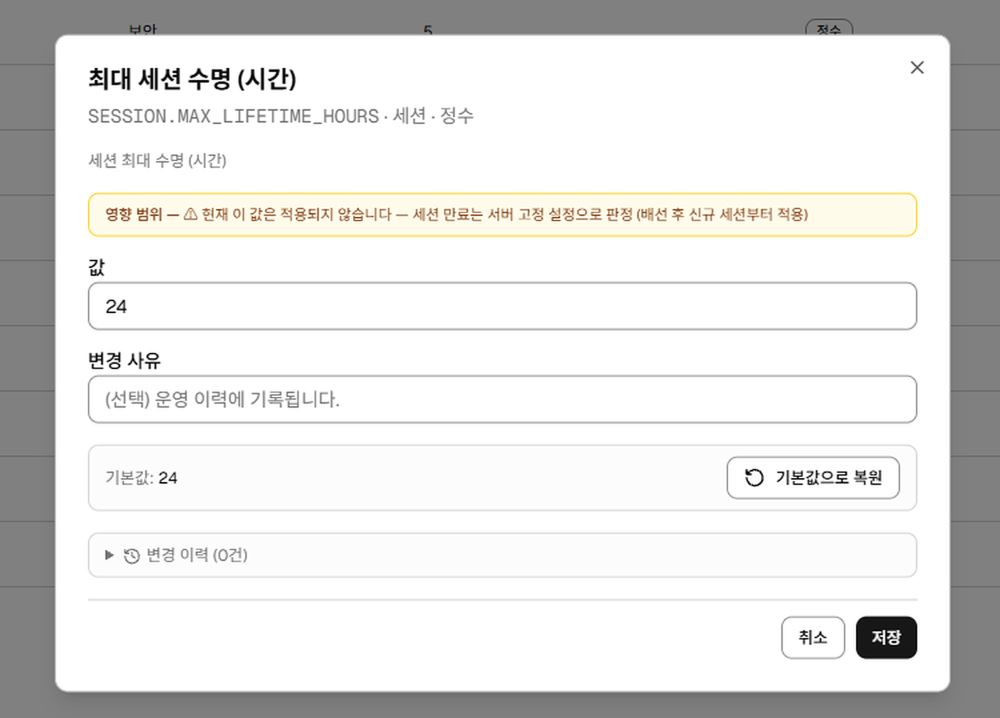
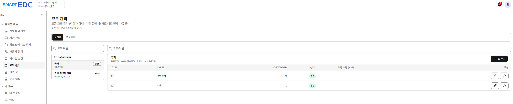
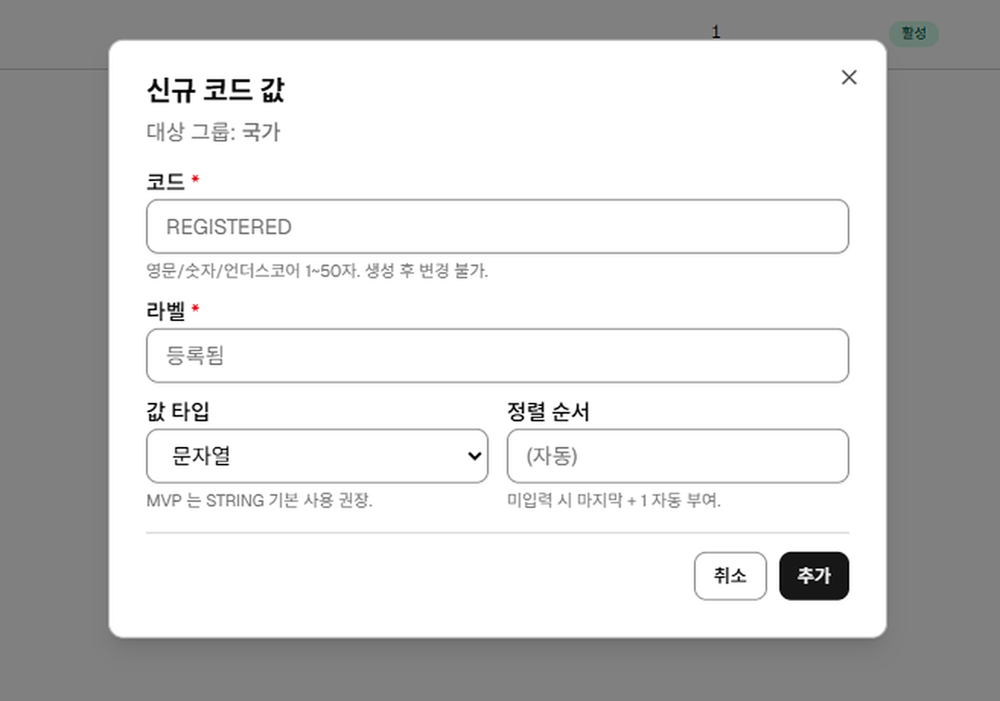
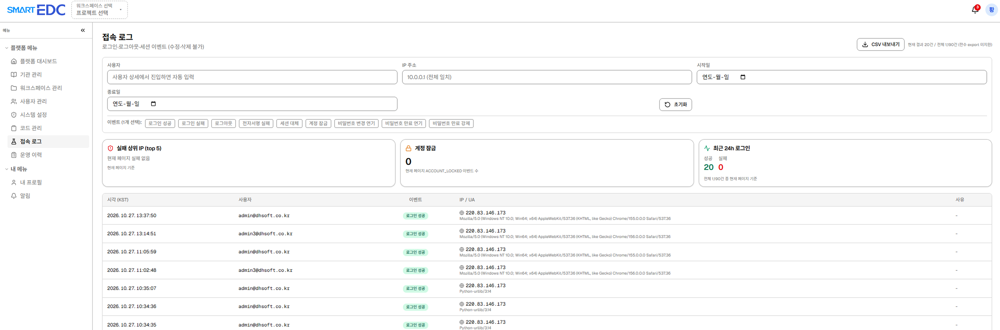
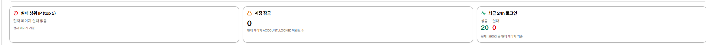
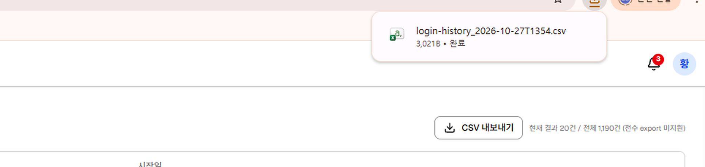
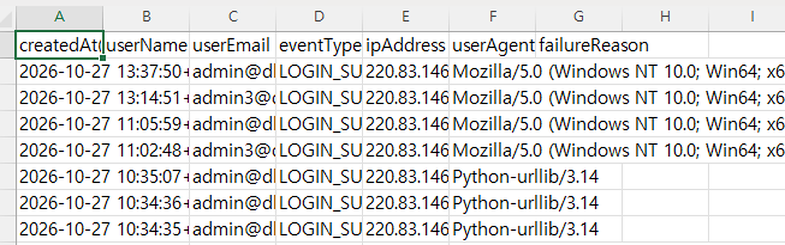
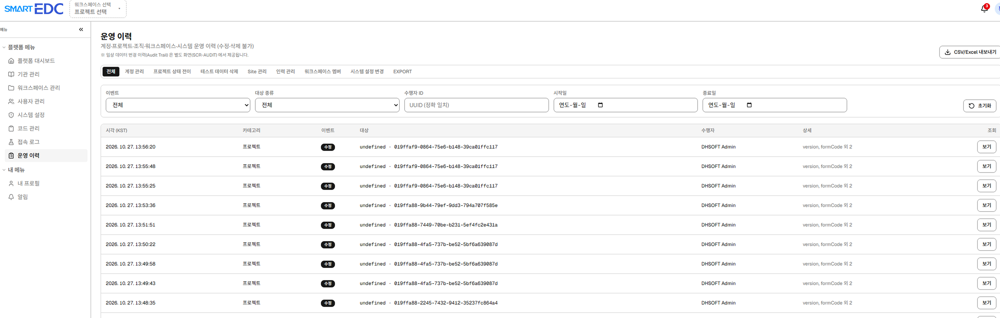
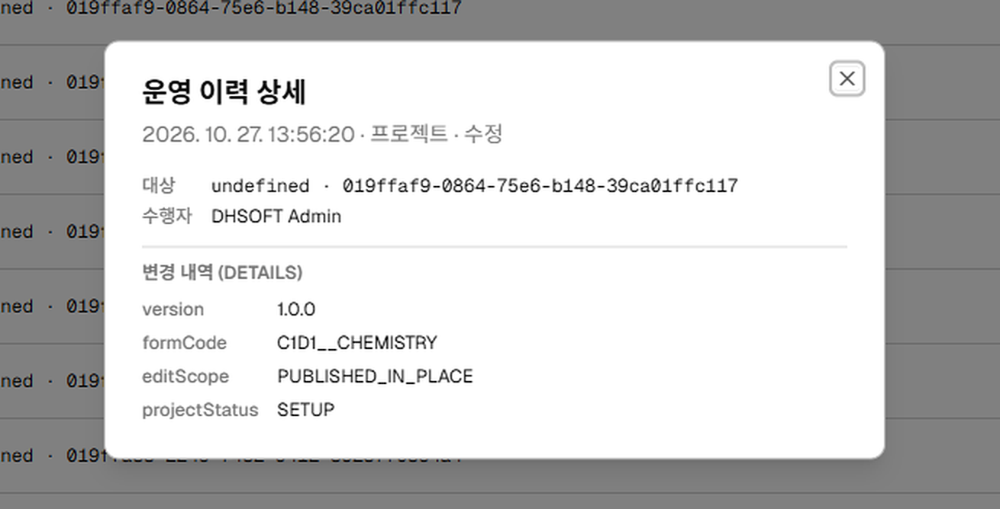

플랫폼 관리
SCR-PLT-004·005·006·007 · 시스템 설정 · 코드 관리 · 접속 로그 · 운영 이력
시스템 설정
- 1.1화면 구성
- 1.2설정값 편집
1.1화면 구성
개요
플랫폼 전역에 적용되는 운영 정책을 한 표로 모아 보여 주는 화면입니다. 값을 직접 바꾸는 곳이 아니라 어떤 정책이 어떤 값으로 설정되어 있는지 확인하는 곳이며, 바꿀 수 있는 항목만 편집 창이 열립니다.
화면 설명

카테고리 탭 — 전체 · 보안 · 세션 · 알림 · 파일 · 일반입니다. 워크스페이스 관리자에게는 세션 · 알림 두 가지만 표시됩니다.
편집 가능 여부 — 잠긴 항목을 걸러내고 바꿀 수 있는 항목만 볼 때 사용합니다.
검색 — 설정 키 또는 설명의 일부로 찾습니다.
초기화 — 걸어 둔 조건을 모두 지웁니다.
편집 — 그 항목의 값을 바꾸는 창을 엽니다 1.2. 잠김 항목은 버튼이 흐리게 표시되어 선택할 수 없습니다.
왼쪽 메뉴의 플랫폼 메뉴 > 시스템 설정 이 이 화면의 유일한 입구입니다.
머리의 “※ 변경 이력은 운영 이력에 기록됩니다.” — 누가 언제 무엇을 바꾸었는지는 운영 이력에서 확인합니다 4.1.
타입 — 정수 · 참/거짓 · JSON 등 값의 형식입니다. 편집 창의 입력 방식이 이 타입에 따라 달라집니다.
상태 — 편집 가능 과 🔒잠김 두 가지입니다. 잠김은 시스템이 고정한 항목이라 관리자도 바꿀 수 없습니다.
최종 수정 (KST) — 한 번도 바꾸지 않았으면 - 입니다.
항목 이름 아래의 영문 글자가 설정 키 입니다. 검색과 운영 이력 조회에 이 키를 사용합니다.
유의사항
필수 확인 데이터 손상 · 폼 완료 불가
- • 여기에서 바꾼 값은 현재 시스템 동작에 반영되지 않습니다. 값과 변경 이력은 저장되지만 실제 판정(로그인 잠금 임계·세션 만료 등)은 별도 설정으로 이루어집니다. 편집 창의 영향 범위 안내가 항목마다 그 사실을 알려 주므로 반드시 확인하십시오 1.2.
1.2설정값 편집
개요
표의 편집 을 선택하면 열리는 창입니다. 값 하나만 바꾸는 단순한 창이지만, 맨 위의 영향 범위 안내가 그 값이 실제로 쓰이는지를 알려 주므로 바꾸기 전에 먼저 읽어야 합니다.
화면 설명

값 — 타입에 맞는 형식으로 입력합니다. 정수 항목은 권장 범위를 벗어나면 저장 전에 안내가 표시됩니다.
변경 사유 — 선택 항목입니다. 입력하면 운영 이력에 함께 기록되므로, 왜 바꾸었는지 남겨 두는 편이 좋습니다.
기본값으로 복원 — 기본값을 입력란에 채워 넣기만 합니다. 이 선택만으로는 저장되지 않으므로 이어서 저장을 선택해야 합니다.
저장 — 값을 반영합니다. 옆의 취소 를 선택하면 변경을 버리고 창을 닫습니다.
창 머리에 설정 키 · 카테고리 · 타입 이 함께 표시됩니다. 다른 항목을 열지 않았는지 여기에서 확인하십시오.
노란 영향 범위 안내 — 그 값이 실제 동작에 반영되는지를 알려 줍니다. 아래 유의사항을 확인하십시오.
변경 이력 — 이 항목만의 변경 기록입니다. 건수가 0이면 한 번도 바꾸지 않은 것입니다.
취소 — 변경을 버립니다.
창 밖을 선택하거나 닫기를 선택해도 같습니다.
유의사항
필수 확인 데이터 손상 · 폼 완료 불가
- • 현재 모든 항목이 「적용되지 않습니다」로 안내됩니다. 값과 변경 이력은 저장되지만 로그인 잠금·세션 만료 등 실제 판정은 별도 설정에서 이루어지기 때문입니다. 정책을 실제로 바꾸어야 한다면 이 화면만으로는 충분하지 않으므로 시스템 담당자에게 요청하십시오.
코드 관리
- 2.1화면 구성
- 2.2코드 값 추가
2.1화면 구성
개요
화면 곳곳의 드롭다운·배지에 쓰이는 표준 코드를 관리하는 화면입니다. 왼쪽에서 코드 그룹을 고르면 오른쪽에 그 그룹의 값 목록이 표시되는 2단 구성입니다. 피험자 상태·기관 유형· 방문 미방문 사유 등이 모두 여기에서 나옵니다.
화면 설명

플랫폼 / 프로젝트 탭 — 플랫폼은 전 프로젝트 공통 코드, 프로젝트는 그 프로젝트만의 코드입니다. 프로젝트 탭은 프로젝트에 들어가 있어야 열립니다.
+ 값 추가 — 선택한 그룹에 코드 값을 추가합니다 2.2.
행 액션 — 왼쪽 연필은 수정(라벨·정렬 순서), 오른쪽은 활성/비활성 전환입니다. 활성에서 비활성으로 바꿀 때는 확인 창을 한 번 더 거칩니다.
코드 그룹을 선택하면 오른쪽 값 목록이 그 그룹으로 바뀝니다.
왼쪽 메뉴의 플랫폼 메뉴 > 코드 관리 가 이 화면의 유일한 입구입니다.
“※ 변경은 운영 이력에 기록됩니다.” — 코드 변경도 운영 이력에 남습니다 4.1.
그룹 머리에 그룹 코드 · 범위 · 값 개수 · 유형 이 표시됩니다. 유형이 SYSTEM 인 그룹은 시스템이 시드한 표준 코드입니다.
열 구성 — CODE · LABEL · SORTORDER · 상태 · 최종 수정 (KST) · 액션 입니다. 화면에 보이는 글자는 CODE 가 아니라 LABEL 입니다.
상태 — 비활성으로 바꾼 값은 새로 선택할 수 없게 되지만, 이미 그 값으로 저장된 자료는 그대로 남습니다.
검색은 왼쪽(그룹)과 오른쪽(값)에 각각 있습니다.
유의사항
오해하기 쉬운 동작
- • 플랫폼 범위 코드는 시스템 관리자만 편집할 수 있습니다. 워크스페이스 관리자와 데이터 관리자는 프로젝트 탭의 코드만 편집할 수 있으며, 그 탭은 프로젝트에 들어간 상태라야 열립니다.
2.2코드 값 추가
개요
선택한 그룹에 코드 값을 하나 추가합니다. 코드 는 시스템이 저장하는 값이고 라벨 은 화면에 표시되는 글자입니다. 둘을 혼동하면 화면에는 멀쩡해 보여도 저장값이 달라지므로 주의하십시오.
화면 설명

코드 * — 시스템에 저장되는 값입니다. 영문·숫자·언더스코어 1~50자이며 생성 후에는 변경할 수 없습니다.
라벨 * — 화면에 표시되는 글자입니다. 이쪽은 나중에 수정할 수 있습니다.
값 타입 — 문자열이 기본이며 대부분 그대로 두면 됩니다.
정렬 순서 — 목록에서의 순서입니다. 비워 두면 자동으로 매겨집니다.
추가 — 값을 만듭니다. 옆의 취소 를 선택하면 입력이 버려집니다.
창 머리에 대상 그룹 이 표시됩니다. 다른 그룹에 값을 넣고 있지 않은지 여기에서 확인하십시오.
코드 칸 아래에 사용 가능한 문자와 길이, 그리고 변경 불가가 함께 안내됩니다.
값 타입 안내 — 문자열 사용을 권장합니다.
정렬 순서 안내 — 비워 두면 마지막 값 + 1 이 자동으로 부여됩니다.
취소 — 창을 닫고 아무 것도 만들지 않습니다.
유의사항
필수 확인 데이터 손상 · 폼 완료 불가
- • 코드는 생성 후 끝까지 변경할 수 없습니다. 이미 그 코드로 저장된 자료가 생기면 값을 되돌릴 방법이 없으므로, 연구 표준이나 보고 양식에서 쓰는 코드 체계를 먼저 확인한 뒤 입력하십시오. 잘못 만든 값은 삭제가 아니라 비활성 으로 처리합니다.
접속 로그
- 3.1화면 구성
- 3.2검색 · 필터와 집계
- 3.3CSV 내보내기
3.1화면 구성
개요
누가 언제 어디에서 접속했는지를 기록한 화면입니다. 기록은 추가만 되고 수정·삭제가 불가능하므로, 계정 도용이나 비정상 접속을 확인하는 1차 자료가 됩니다. 시스템 관리자는 전체를, 워크스페이스 관리자는 자기 워크스페이스 범위를 봅니다.
화면 설명

CSV 내보내기 — 지금 보고 있는 결과를 파일로 저장합니다 3.3.
사용자 · IP 주소 · 시작일 · 종료일 — 조회 범위를 좁힙니다 3.2.
이벤트 — 로그인 성공·실패, 로그아웃, 전자서명 실패 등 9가지 중 하나를 선택합니다 3.2.
초기화 — 걸어 둔 조건을 모두 지웁니다.
왼쪽 메뉴의 플랫폼 메뉴 > 접속 로그 가 상시 입구입니다. 사용자 관리의 사용자 상세에서도 그 사용자로 걸러진 상태로 들어올 수 있습니다.
버튼 옆에 현재 결과 N건 / 전체 N건 이 표시됩니다. 아래 유의사항을 확인하십시오.
집계 카드 3장 — 실패 상위 IP · 계정 잠금 · 최근 24h 로그인입니다 3.2.
열 구성 — 시각 (KST) · 사용자 · 이벤트 · IP / UA · 사유 입니다. IP 아래 작은 글씨가 접속에 사용된 프로그램(UA)입니다.
이벤트 배지 — 실패 계열은 붉게 표시되어 한눈에 구분됩니다.
부제의 “(수정·삭제 불가)” — 기록을 지우거나 고칠 수 없다는 뜻입니다.
유의사항
오해하기 쉬운 동작
- • 쪽 번호가 아니라 이전 / 다음 으로만 넘어갑니다. 기록이 계속 쌓이는 자료라 쪽 경계가 밀리면 조회 중인 행이 중복되거나 빠질 수 있어, 시스템이 번호 이동을 제공하지 않습니다.
3.2검색 · 필터와 집계
개요
조회 조건은 다섯 가지이며 서로 겹쳐 적용됩니다. 그 아래 집계 카드 3장은 조회 결과를 요약해 주지만 현재 쪽에 불러온 20건만 센다는 점을 반드시 염두에 두어야 합니다.
화면 설명


사용자 — 계정으로 좁힙니다.
IP 주소 — 전체가 일치해야 합니다. 일부만 입력하면 걸러지지 않습니다.
시작일 — 조회 시작 날짜입니다.
종료일 — 조회 종료 날짜입니다. 시작일과 함께 기간을 지정합니다.
초기화 — 다섯 조건을 모두 지웁니다.
이벤트 — 한 번에 하나만 선택됩니다. 선택된 칩을 다시 선택하면 해제됩니다.
사용자 칸의 안내 — 사용자 관리의 사용자 상세에서 들어오면 그 계정이 자동으로 입력됩니다.
IP 칸의 안내 — 예시 형식이 표시됩니다.
실패 상위 IP (top 5) — 로그인 실패가 몰린 IP 입니다. 같은 IP 에서 실패가 반복되면 계정 도용 시도를 의심할 수 있습니다.
계정 잠금 — 잠금 이벤트 건수입니다.
최근 24h 로그인 — 성공과 실패 건수입니다.
세 카드 모두 밑에 현재 페이지 기준 이 적혀 있습니다. 아래 유의사항을 확인하십시오.
유의사항
필수 확인 데이터 손상 · 폼 완료 불가
- • 집계 카드 3장은 전체가 아니라 현재 쪽 20건만 셉니다. 「실패 상위 IP 없음」 이나 「계정 잠금 0」 은 이 쪽에 없다는 뜻이지 전체 기간에 없다는 뜻이 아닙니다. 전체를 보려면 이벤트 필터를 로그인 실패 또는 계정 잠금 으로 걸고 다시 조회하십시오.
3.3CSV 내보내기
개요
조회 결과를 쉼표로 구분된 파일(CSV)로 내려받습니다. 별도의 요청·대기 없이 화면에서 바로 만들어지며, 파일명에 내려받은 시각이 들어갑니다.
화면 설명


CSV 내보내기 — 선택하면 확인 창 없이 바로 파일이 내려받아집니다.
버튼 옆의 현재 결과 N건 / 전체 N건 (전수 export 미지원) — 아래 유의사항을 확인하십시오.
내려받기 알림에 파일명과 크기가 표시됩니다. 파일명은 login-history_연월일T시분.csv 형식입니다.
열 7종 — 시각(KST) · 이름 · 이메일 · 이벤트 · IP 주소 · 접속 프로그램(UA) · 실패 사유 입니다. 내부 식별 코드는 포함되지 않습니다.
한 행이 접속 이벤트 한 건입니다. 화면의 표와 같은 순서로 담깁니다.
유의사항
필수 확인 데이터 손상 · 폼 완료 불가
- • 내려받는 것은 현재 쪽 결과뿐입니다. 버튼 옆 안내의 「전수 export 미지원」 이 그 뜻으로, 전체 기간을 받으려면 기간·이벤트 조건을 좁혀 여러 번 나누어 내려받아야 합니다. 파일에는 계정 이메일과 접속 IP 가 그대로 담기므로 개인정보가 포함된 파일로 취급해 보관· 공유하십시오.
운영 이력
- 4.1화면 구성
- 4.2상세 보기
4.1화면 구성
개요
계정·프로젝트·참여 기관·워크스페이스·시스템 설정에 대해 누가 무엇을 바꾸었는지를 기록한 화면입니다. 접속 로그가 「드나든 기록」이라면 이쪽은 「바꾼 기록」입니다. 역시 추가만 되고 수정·삭제가 불가능합니다.
화면 설명

카테고리 탭 — 계정 관리 · 프로젝트 상태 전이 · 테스트 데이터 삭제 · Site 관리 · 인력 관리 · 워크스페이스 멤버 · 시스템 설정 변경 · EXPORT 로 묶어 봅니다.
이벤트 — 생성 · 수정 · 삭제 등 행위 종류로 좁힙니다.
대상 종류 — 계정 · 프로젝트 · 기관 등 무엇을 바꾸었는지로 좁힙니다.
수행자 ID — 특정 사용자의 행위만 봅니다. 식별자 전체가 일치해야 합니다.
CSV/Excel 내보내기 — 조회 결과를 파일로 요청합니다.
보기 — 그 행의 상세 창을 엽니다 4.2. 무엇이 어떻게 바뀌었는지는 이 창에서만 확인할 수 있습니다.
왼쪽 메뉴의 플랫폼 메뉴 > 운영 이력 이 상시 입구입니다.
“※ 임상 데이터 변경 이력(Audit Trail) 은 별도 화면에서 제공됩니다.” — 피험자 데이터를 고친 기록은 여기가 아니라 Audit Trail 에 있습니다.
대상 열 — 지금은 앞부분이 undefined 로 표시됩니다. 아래 유의사항을 확인하십시오.
상세 열 — 바뀐 항목 이름이 요약으로 표시됩니다. 값까지 보려면 보기 를 선택합니다.
시작일 · 종료일 — 기간을 지정합니다.
유의사항
필수 확인 데이터 손상 · 폼 완료 불가
- • 「대상」 열 앞부분의 undefined 는 표시 결함입니다. 시스템이 아직 이름을 모르는 종류의 대상이라 그렇게 표시되는 것이며, 기록 자체가 잘못된 것은 아닙니다. 무엇을 바꾼 기록인지는 카테고리 열과 뒤에 붙은 식별자, 그리고 보기 의 변경 내역으로 판단하십시오.
4.2상세 보기
개요
목록의 보기 로 여는 창입니다. 목록이 언제 · 누가 · 무엇을 까지 보여 준다면, 이 창은 거기에 어떻게 바뀌었는지를 더합니다. 조회 전용이며 여기에서 고칠 수 있는 것은 없습니다.
화면 설명

닫기 — 창을 닫고 목록으로 돌아갑니다. 창 밖을 선택해도 같습니다.
창 머리에 시각 · 카테고리 · 이벤트 가 한 줄로 표시됩니다.
대상 — 목록의 대상 열과 같은 값입니다. 앞부분의 undefined 는 표시 결함이므로 뒤의 식별자를 사용하십시오 (4.1 유의사항 참조).
수행자 — 행위를 수행한 사용자입니다. 이메일이 함께 기록된 경우 아래에 덧붙습니다.
변경 내역 (DETAILS) — 이 창의 핵심입니다. 바뀐 항목이 이름과 값의 쌍으로 나열됩니다.
항목 이름이 영문인 것은 시스템 내부 이름을 그대로 보여 주기 때문입니다. 캡처는 CRF 폼 수정 기록이라 버전·폼 코드·편집 범위·프로젝트 상태가 함께 남았습니다.
유의사항
오해하기 쉬운 동작
- • 운영 이력은 운영·관리 행위만 담습니다. 피험자 데이터를 고친 기록은 별도의 Audit Trail 화면에 있으므로, 규제 대응 자료를 준비할 때는 두 화면을 함께 확인해야 합니다.